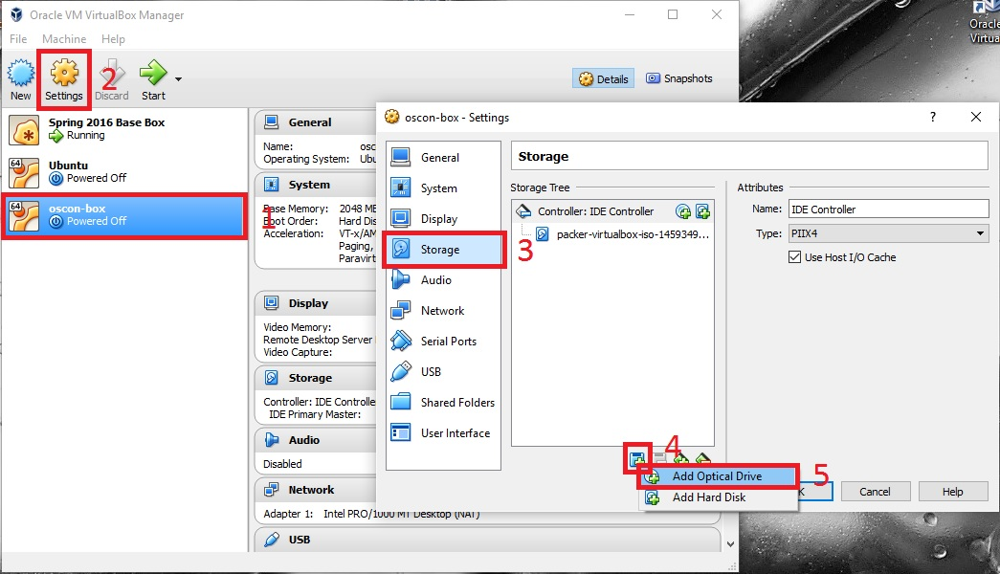
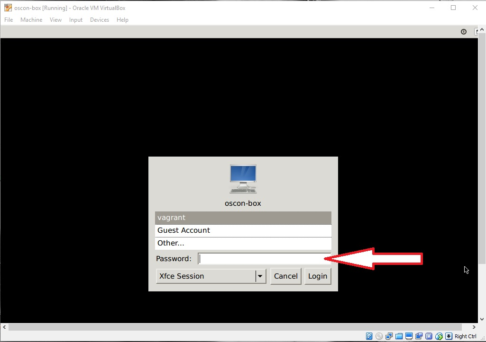
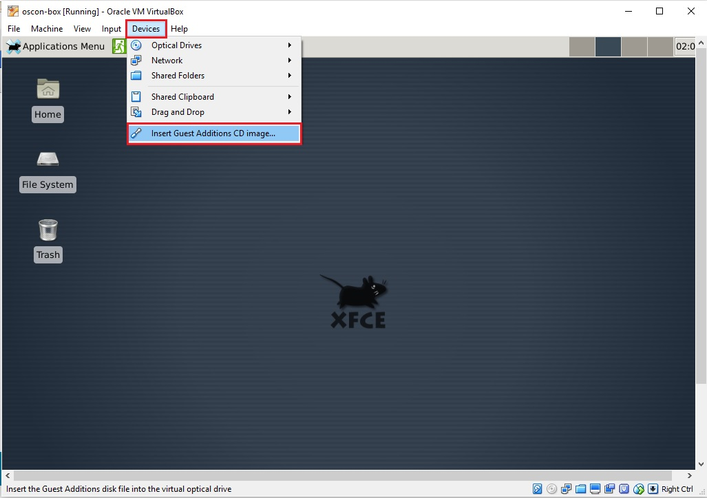

SPA Bootcamp Instructions
If you are comfortable working with Node and Github together to build things you won't really need to do anything special. We built a Vagrant base box that does a fair job of emulating our development environment. This page lays out how to get it downloaded and running.
We will be in BOF room on Monday night, May 16, from 7:00 to 9:00 pm to help any of you get a working environment set up for our tutorial on Tuesday, May 17.
OSCON16 Vagrant Base Box
New to Vagrant? Here is basic documentation
Follow these steps to get your Vagrant machine running
- Download and unzip our custom Vagrant box >>>>>DOWNLOAD LINK (~120MB) <<<<
- Bring up the box (vagrant up); allow installation to complete
- Halt the box (vagrant halt)
- Install the guest additions as follows:
In the VirtualBox console, select the oscon-box -> settings -> storage ->
add new storage attachment -> add optical drive -> leave it empty

- Reboot (vagrant up)
-
Login screen, leave everything as it is and use password "vagrant"

-
Top menu -> Devices -> Insert Guest additions CD image

- sudo mkdir /mnt/cdrom
- sudo mount /dev/sr0 /mnt/cdrom
- cd /mnt/cdrom
- sudo ./VBoxLinuxAdditions.run (NOTE: "dot-slash" at beginning)
- sudo umount /mnt/cdrom
- On your host machine to shut down run :$ vagrant halt